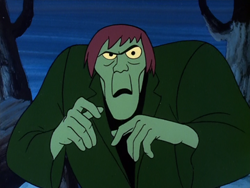
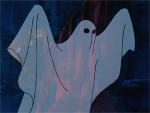
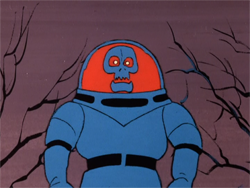
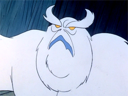
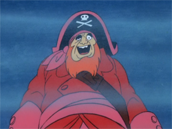
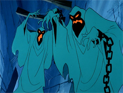

The Creeper  The Creeper Knows His Name https://scoobydoo.fandom.com/wiki/Creeper_(Scooby-Doo,_Where_Are_You!) The Creeper Intro Your browser doesn't support HTML 5 video. Jeepers It's The Creeper Jeepers It's The Creeper - Part 1 Jeepers It's The Creeper - Part 2 Jeepers It's The Creeper - Part 3 Jeepers It's The Creeper - Part 4 Phantom  The Phantom Speaks... And Laughs! https://scoobydoo.fandom.com/wiki/Phantom_(Hassle_in_the_Castle) The Phantom Intro Your browser doesn't support HTML 5 video. Hassle in the Castle Hassle in the Castle - Part 1 Hassle in the Castle - Part 2 Hassle in the Castle - Part 3 Hassle in the Castle - Part 4 Spooky Space Kook  Someone Has the Tickles! https://scoobydoo.fandom.com/wiki/Spooky_Space_Kook The Spooky Space Kook Intro Your browser doesn't support HTML 5 video. Spooky Space Kook Spooky Space Kook - Part 1 Spooky Space Kook - Part 2 Spooky Space Kook - Part 3 Spooky Space Kook - Part 4 Snow Ghost  Grrraaaarrr and Rrrrraaaarrrr! https://scoobydoo.fandom.com/wiki/Snow_Ghost Snow Ghost Intro Your browser doesn't support HTML 5 video. That's Snow Ghost That's Snow Ghost - Part 1 That's Snow Ghost - Part 2 That's Snow Ghost - Part 3 That's Snow Ghost - Part 4 Ghost of Redbeard  Redbeards Homemade Stew! https://scoobydoo.fandom.com/wiki/Ghost_of_Redbeard_(Go_Away_Ghost_Ship) Ghost of Redbeard Intro Your browser doesn't support HTML 5 video. Go Away Ghost Ship Go Away Ghost Ship - Part 1 Go Away Ghost Ship - Part 2 Go Away Ghost Ship - Part 3 Go Away Ghost Ship - Part 4 The Green Ghosts  Just Having a Good Time! https://scoobydoo.fandom.com/wiki/Green_Ghosts_(A_Night_of_Fright_is_No_Delight) Green Ghosts Intro Your browser doesn't support HTML 5 video. A Night of Fright is No Delight A Night of Fright is No Delight - Part 1 A Night of Fright is No Delight - Part 2 A Night of Fright is No Delight - Part 3 A Night of Fright is No Delight - Part 4 SCOOBY DOO, WHERE ARE YOU! Ending Themes Season One.m4a Season Two.m4a Season Three.m4a